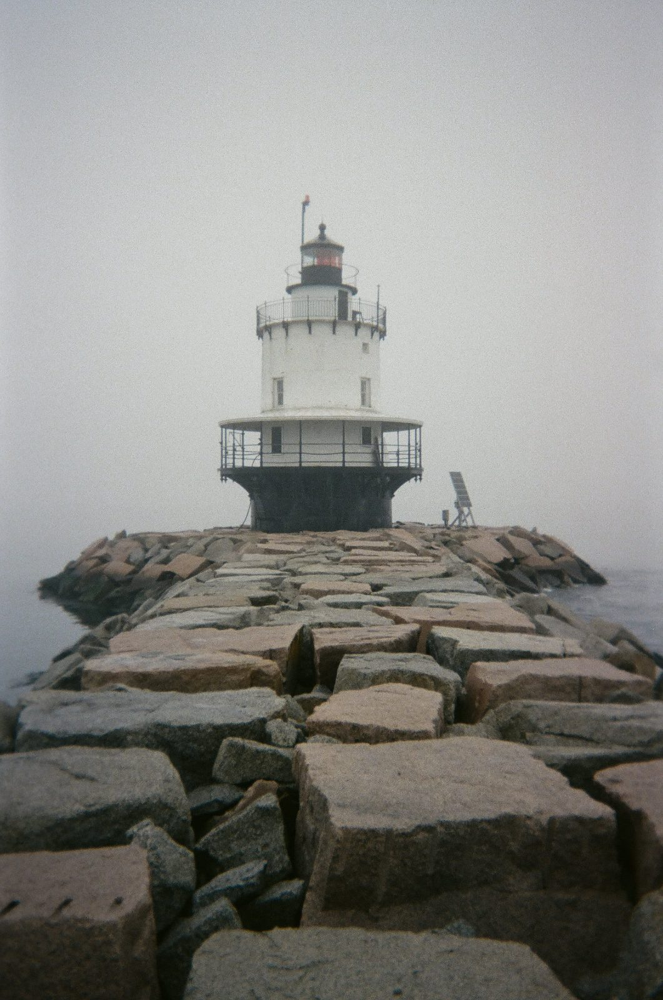
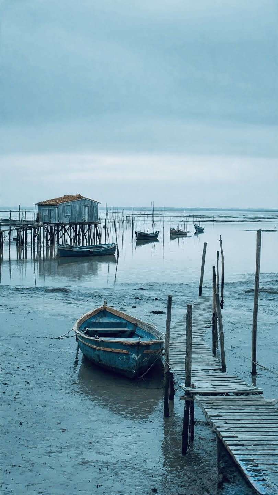

Holmscar Harbour Authority
A trust port on the River Rill. Run by a board for the town since 1872. No shareholders; fees go back into the harbour.
Practice site. Holmscar Harbour is fictional. Tides, berths, fees and notices are made up. Not for navigation.
The harbour
Fourteen fishing boats work from the Fish Quay, mostly crab and lobster potters and two small trawlers. Leisure boats use the inner basin, behind a sill built in 1994, and the visitor pontoon in the outer harbour.
The authority keeps the channel dredged, maintains five lights and nine buoys, and issues notices to mariners for anything that changes in the harbour or its approaches.
- 186berths in the harbour
- 37visitor spaces
- 14fishing boats registered
- 2.0 mdredged depth in the approach channel
- 1.9 mmarina sill above chart datum
- 9harbour staff
Dates
- 1872Holmscar Harbour Act. A trust port, run by a board for the town.
- 1891East breakwater finished. Fish Quay wall rebuilt in granite.
- 1964Leading lights moved to 312° after the channel was realigned.
- 1994Inner basin closed with a sill at 1.9 m. Marina pontoons A to C.
- 2019Visitor pontoon in the outer harbour, afloat at all states of tide.
- 2026Four new visitor moorings, M5 to M8.


Photographs
From Pinterest. Each belongs to its original poster; the licence is not confirmed. Any photo is replaced on request.
- breakwater-fog.jpg pinterest.com/pin/654851602114226574/
- red-light.jpg pinterest.com/pin/43769427624910002/
- pier-dusk.jpg pinterest.com/pin/395472411053698584/
- low-water.jpg pinterest.com/pin/4574037118666301/
- cleat.jpg pinterest.com/pin/543317142567333077/
- pontoon-posts.jpg pinterest.com/pin/9218374233268887/
- mooring-post.jpg pinterest.com/pin/179440366400293609/